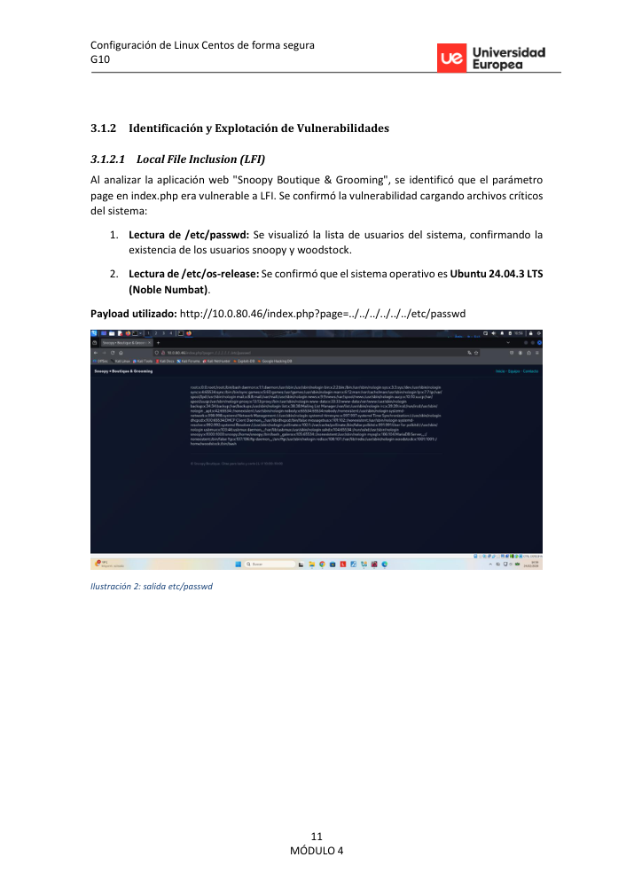
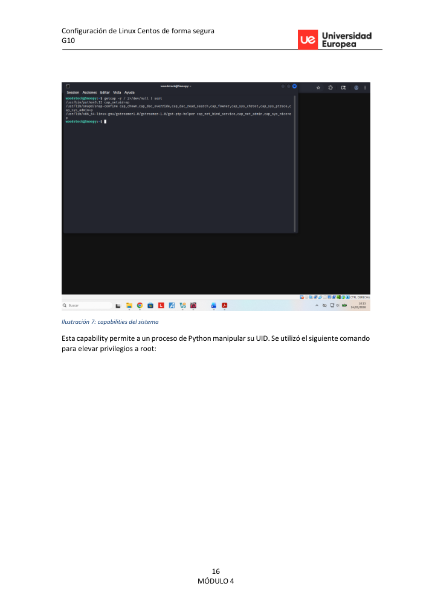

Executive summary
Se documenta una cadena de compromiso completa sobre una máquina Linux: enumeración de servicios, identificación de un parámetro vulnerable a Local File Inclusion, localización de credenciales expuestas en un backup accesible por web, acceso por SSH y escalada a root mediante una capability peligrosa asignada al intérprete de Python.
Attack path
La fase inicial descubre FTP, SSH, HTTP, MySQL y un servicio de diagnóstico. El archivo robots.txt apunta a rutas de configuración. A partir de ahí se valida la lectura de archivos del sistema y se utiliza la exposición de credenciales para pivotar a acceso interactivo.
Recruiter signal
Este writeup muestra metodología ordenada, capacidad de correlación entre pistas, validación técnica de hallazgos y explicación defensiva clara, no solo ejecución de comandos.
Command notebook
Comandos representativos del laboratorio. Los valores sensibles se han sustituido por placeholders.
nmap -sC -sV -p- <target>
curl "http://<target>/index.php?page=../../../../../../etc/passwd"
ssh woodstock@<target> # password redacted in public version
getcap -r / 2>/dev/null
python3 -c 'import os; os.setuid(0); os.system("/bin/bash")'Pasos resumidos con evidencias
Reconocimiento de servicios
Escaneo completo con Nmap para identificar FTP, SSH, HTTP, MySQL y servicio de diagnóstico.
Enumeración web inicial
Revisión de la aplicación y del archivo robots.txt para localizar rutas de configuración no pensadas para exposición pública.

Validación de LFI
Prueba del parámetro page con rutas locales controladas para confirmar lectura arbitraria de ficheros.

Correlación de información
Uso de la LFI y de las rutas descubiertas para entender usuarios del sistema y superficie disponible.
Acceso inicial
Credenciales expuestas en un backup permitieron acceso SSH a un usuario no privilegiado.
Enumeración post-explotación
Búsqueda de vectores locales revisando SUID, sudo y capabilities.
Escalada y remediación
Abuso de cap_setuid para elevar privilegios y propuesta de hardening.
Key findings
The page parameter accepts arbitrary filesystem paths.
Impacto técnico identificado y validado durante el laboratorio. En una evaluación real se priorizaría por criticidad, explotabilidad y alcance.
Backup/configuration material was exposed from a web-accessible directory.
Impacto técnico identificado y validado durante el laboratorio. En una evaluación real se priorizaría por criticidad, explotabilidad y alcance.
A Python binary with cap_setuid allows UID manipulation and root escalation.
Impacto técnico identificado y validado durante el laboratorio. En una evaluación real se priorizaría por criticidad, explotabilidad y alcance.
Visual evidence
Remediation notes
- Whitelist valid page templates instead of concatenating user-controlled paths.
- Block web access to configuration directories and backup extensions.
- Audit Linux capabilities periodically and remove cap_setuid from interpreters.